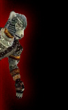

The Verin Walks Again... - By Bloodrose......walking through the forest, she stops, looks around to see if she is being followed. Continues to an opening in a tree, she opens the secret passage that hides the life that grows. Pushing the vines away to the side, she enters. Inside is a secret cavern, a olath, moist place that has been kept hidden from all. In the back is a garden. A vlos rose garden. The ground is soaked with vlos from the victims that were burried there half alive, along with the viles of vlos that was poured onto the ground to feed what grew there. The ground shudders as if to be breathing.... Bloodrose kneels beside the garden and reaches her hand towards a rose while saying "aahh dost all are ussa's dalharen, usstann has grown dos all from less than seeds, fed dos all and kept dos from the rivvils that plague this land. Ussatann's ogglin's have never found dos all. Usstann's xukuth flows in everyone of dos. Usstann has fed dos phlith, Ssin, verin, vlos, z'ress of the olath faer, and the Ssinssrigg of all the verin usstann could pull from Innoruuk." She bows her head in shame. "Usstann has sat here many moons watching the rays from the ever changing moons hit dost peddals. Making dos all strong, while usstann poured vlos to keep dost all from thirst". *She takes a deep heavy sigh*. "Ahhh usstann precious dalharen, time is come to move" *a vlos tear drips from Bloodrose's sol* as she watched her flowers move towards her. They sense her intentions. Pulling one rose from the ground she craddles it in her arms as the others wrap their viens around her. Bloodrose sit there listening to the screams of the blood rose she has pulled from the ground. Feeling it's jiv'undus. *She gentlly touches it's pedals as to comfort the small one* .....After many hours in her garden she closes the entrance so it will never be found again. *tears of vlos streamed her face* "Aluve usstanns Dalharen, ussa nau can attend to dos all nau more." With the one single rose in her hands, she walks away.......feeling the olathness that fills her soul. Peering up into the night air as she listens to her roses scream............... As she walkes up the path and away from her dalharen, their cries echo deep within her soul. Bowing her head, she grasps it within her hands, their screams ripping her from within. She falls to her knees and reallizes she can't take it no more. Rising from the ground she turns and heads back to the hollowed tree to return to verin that she knows. Upon opening the rocks and vines that covered the entrance she steps inside to the verin that will always be hers. Walking into the center of the garden, she lays down amongest her dalharen and as their vines wrap around her, she once again she feels the verin and phlith run through her veins. This is where she needs to be. She feels the ssinssrigg of their jiv'undus. "Usstann is so sorry, usstann will never think of leaving dos ever again because ussa realizes leaving will only make usstann weak." Bloodrose rose from the garden to enter into a new realm of verin and phlith. She stands in the entranceway, raises her harvester to Innoruuk and cries ....... " The Verin one shall reign again"... |


